Proteja o coágulo
Morda a gaze pelo tempo indicado e evite bochechos fortes, canudo e cigarro nos primeiros dias.
Siso nascendo torto e doendo, dente muito destruído ou quebrado na raiz? Antes de qualquer procedimento, o dentista examina, explica as alternativas e só indica a extração quando ela é o melhor caminho.
Plantão aberto todos os dias, inclusive de madrugada e no fim de semana.

Dr. Carlos Martins✓
Cirurgião-Dentista · CRO-CE 10625
Extrações • Bucomaxilo
 ★★★★★4,9 no Google
★★★★★4,9 no Google
Sisos inclinados, raízes curvas e dentes presos no osso fazem parte da rotina do consultório. Veja alguns casos atendidos aqui.
Imagens de procedimentos cirúrgicos. Podem mostrar sangue e pontos.
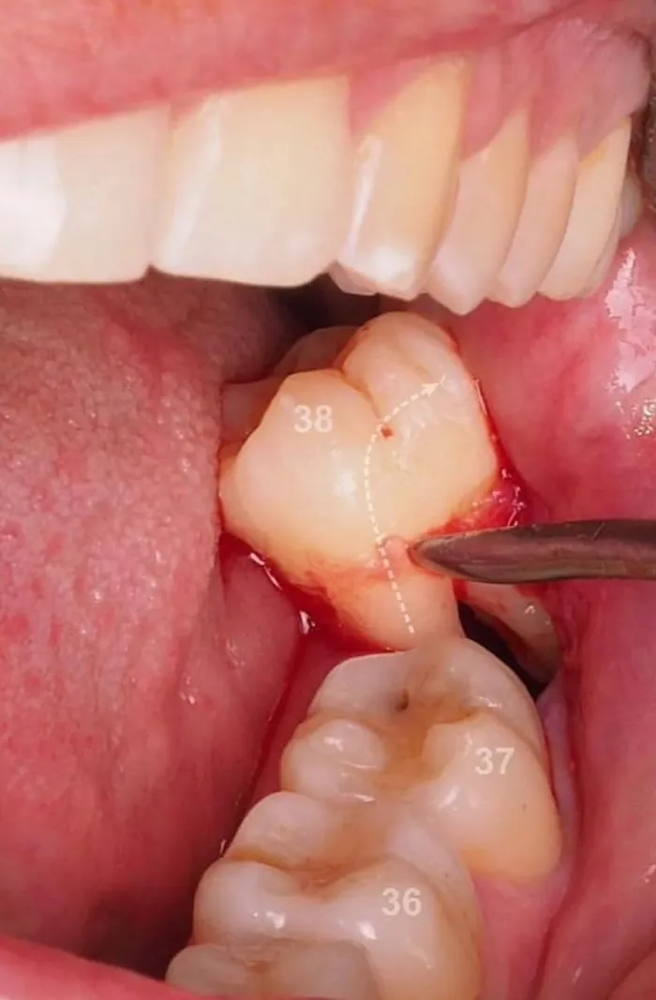
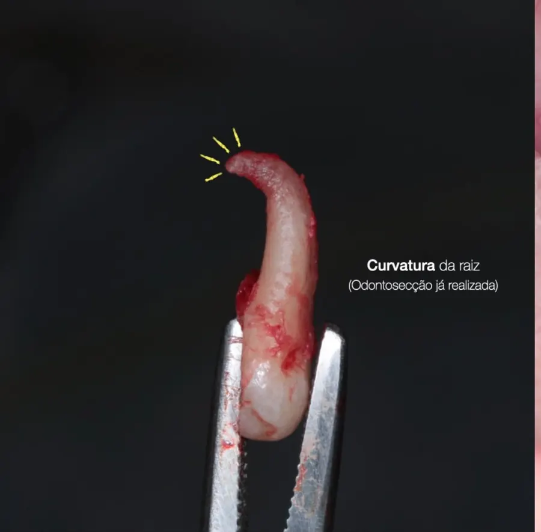
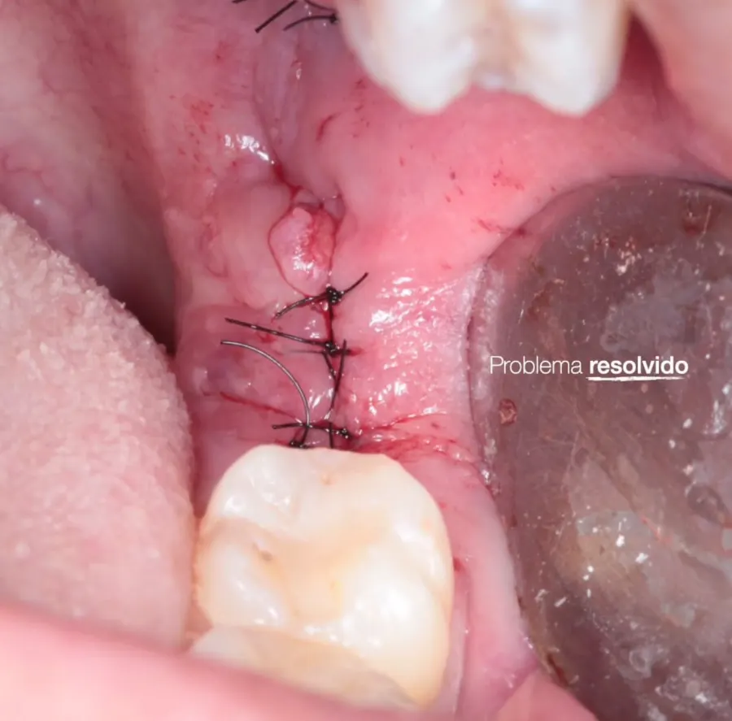
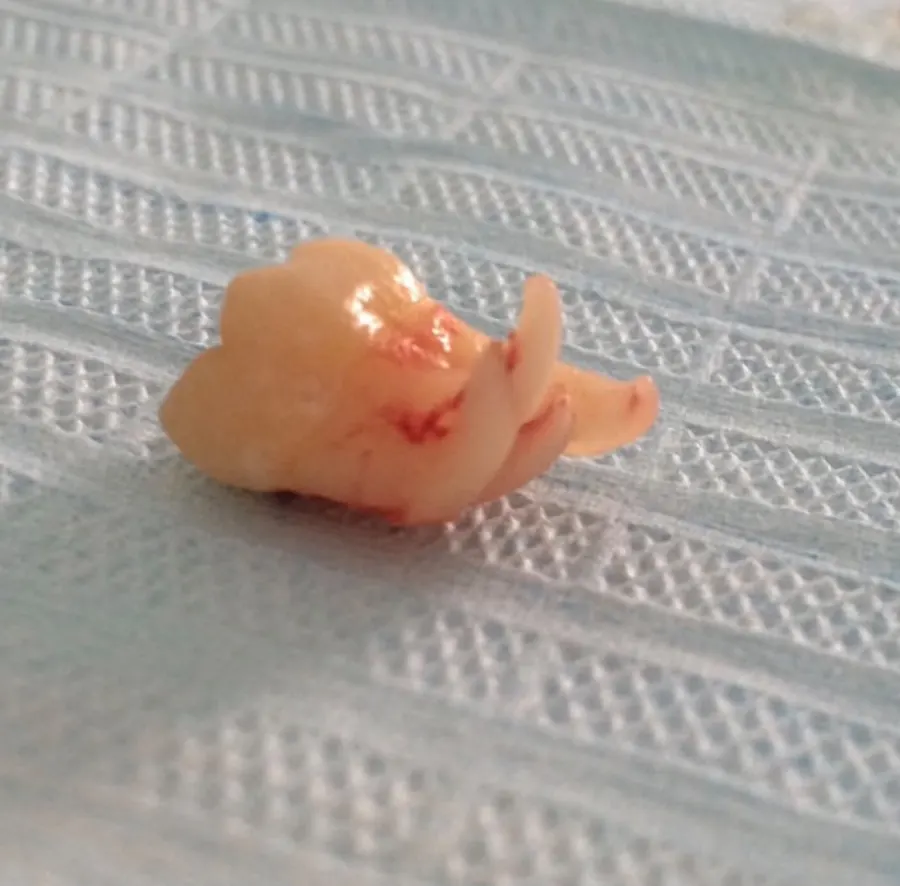
Disseram que o seu siso é difícil? Mande a radiografia pelo WhatsApp e a equipe avalia.
Enviar minha radiografiaSiso incluso, raiz curva, dente perto do nervo: casos que pedem experiência em cirurgia. Antes de operar, o dentista estuda a radiografia e planeja cada passo para tirar o dente com o menor trauma possível.
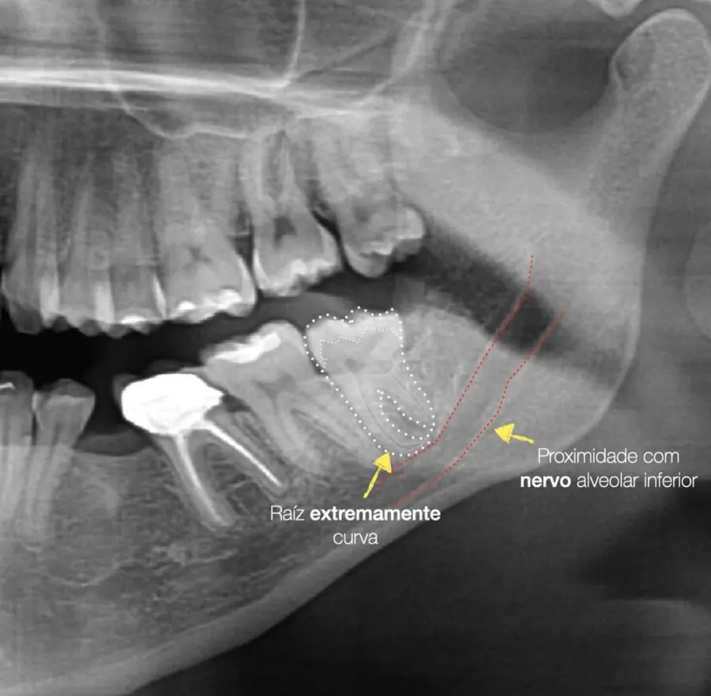
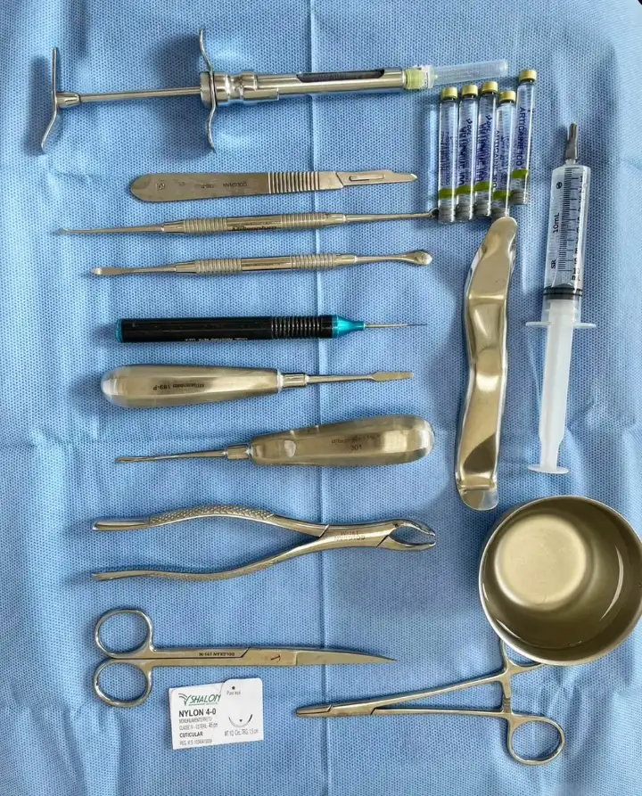
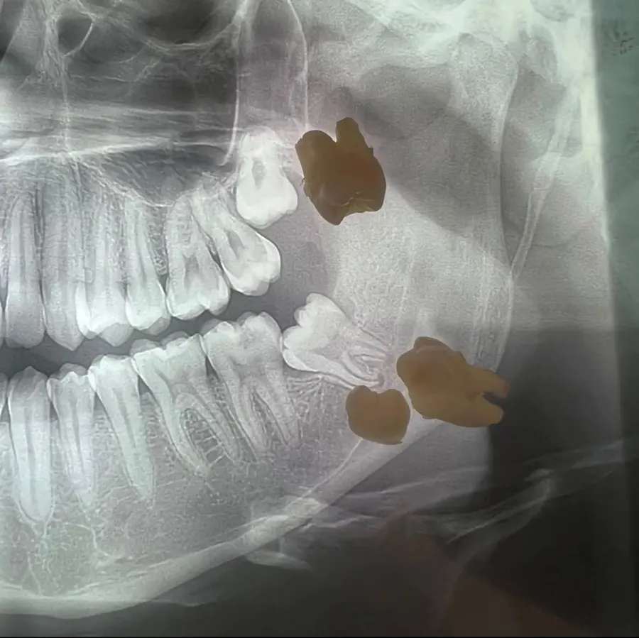
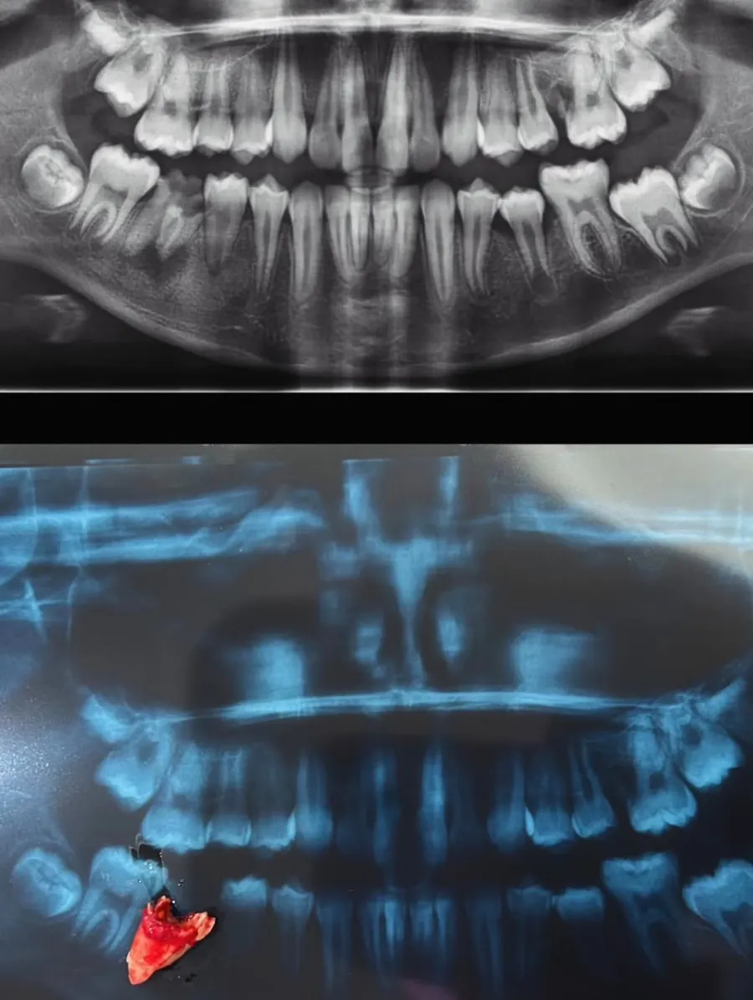
Um caminho simples, explicado em cada etapa.
Conte pelo WhatsApp ou por telefone o que aconteceu e há quanto tempo está sentindo.
O dentista examina e, quando necessário, pede exame de imagem para ver a posição da raiz.
Com anestesia local, a extração é feita com calma, e você é avisado de cada passo.
Você sai com as orientações de cuidado e sabe quando voltar para acompanhar a cicatrização.
Orientações gerais. O dentista ajusta cada uma ao seu caso no fim do atendimento.
Morda a gaze pelo tempo indicado e evite bochechos fortes, canudo e cigarro nos primeiros dias.
No começo, prefira alimentos frios ou mornos e pastosos, mastigando do outro lado.
Sangramento que não para, febre ou dor que aumenta depois de alguns dias: fale com a equipe.

Ninguém gosta de ouvir que precisa tirar um dente. Por isso, antes de qualquer procedimento, você entende o que está acontecendo, quais são as alternativas e o que será feito naquele momento.
Fácil de chegar para quem está no Presidente Kennedy, Parquelândia, São Gerardo, Monte Castelo, Padre Andrade e Antônio Bezerra.
Quando o dente sai, o espaço pode ser reabilitado. Conheça as opções da clínica, ou as alternativas para tentar salvá-lo.
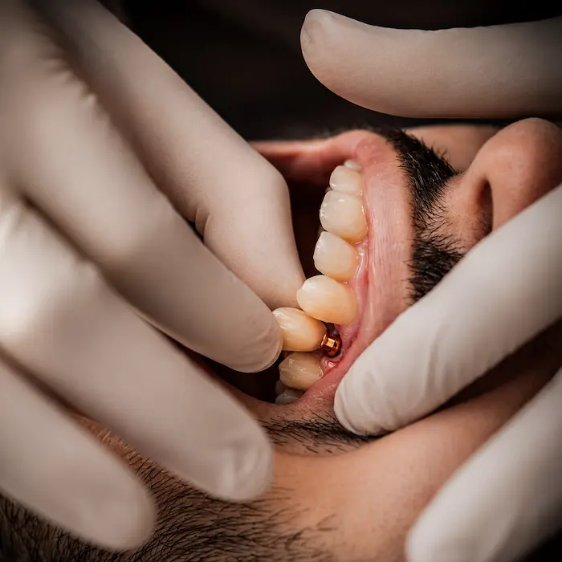
Reposição fixa de dentes perdidos.
Saiba mais →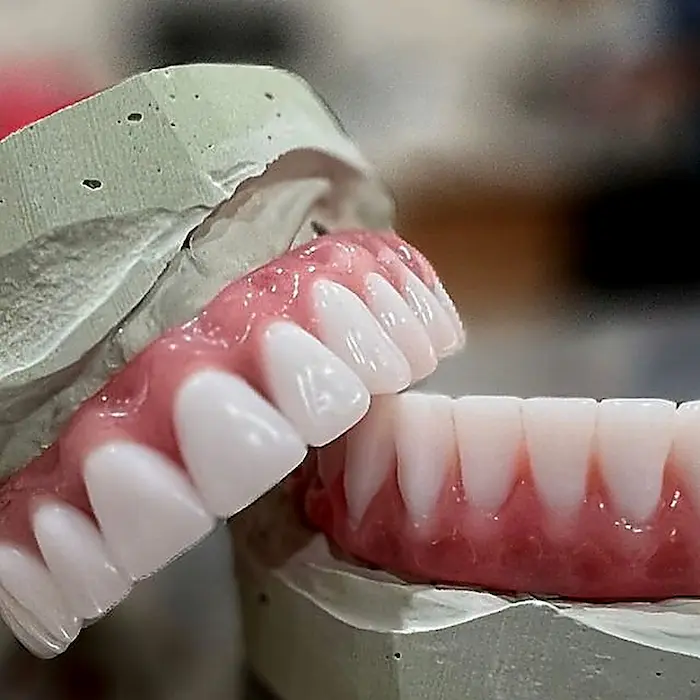
Opções fixas e removíveis.
Saiba mais →
Fixada sobre implantes, mais estabilidade.
Saiba mais →
Cuida da polpa inflamada e preserva o dente.
Saiba mais →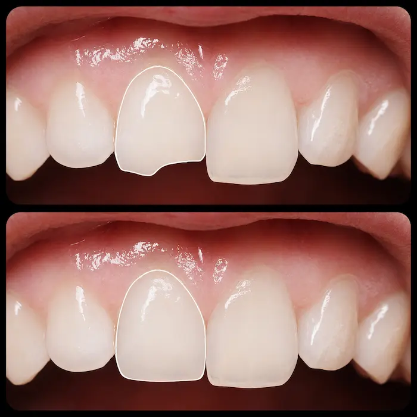
Reconstrução após fratura ou trauma.
Falar no WhatsApp →
Dor de dente a qualquer hora.
Saiba mais → Avaliações no Google da Rede Dentalli
Avaliações no Google da Rede Dentalli
“Fiz um procedimento de extração com o Dr. Victor (…) paciente, cuidadoso, sincero e muito profissional. Obrigada pelo atendimento excepcional e acolhedor.”
“Precisei dele em um momento de muita dor, durante um feriado, e ele foi impecável. Resolvemos tudo da melhor forma, com uma agilidade e qualidade profissional muito acima da média.”
“Ótimo profissional! Atencioso, com esmerada ética e capacidade em solucionar os mais variados entraves odontológicos!”
O procedimento é feito com anestesia local. Durante a extração é comum sentir pressão, mas não dor. Depois, o dentista explica como controlar o desconforto dos primeiros dias.
Depende da avaliação. Se o siso estiver muito inflamado ou infeccionado, às vezes o primeiro passo é controlar a inflamação e marcar a extração para depois. O dentista examina e explica o melhor caminho para o seu caso.
Sim. A Dentalli Presidente Kennedy mantém plantão 24 horas, todos os dias. Você pode chegar de madrugada, à noite, no sábado ou no domingo.
Não é obrigatório, mas recomendamos avisar pelo WhatsApp ou por telefone. Assim a equipe já sabe o que está acontecendo e se organiza para receber você.
Varia de pessoa para pessoa e do tipo de extração. Os primeiros dias pedem mais cuidado. Ao final do atendimento você recebe as orientações por escrito e sabe quando voltar para revisão.
Condições de pagamento facilitadas — consulte pelo WhatsApp.
Se houver inchaço que dificulte respirar ou engolir, febre alta, sangramento que não para ou trauma forte no rosto com desmaio, procure imediatamente um pronto-socorro hospitalar. Depois de estabilizado, o dentista dá continuidade ao cuidado.
Fale com a equipe pelo WhatsApp ou ligue para (85) 99260-4260 e venha a qualquer hora, todos os dias.